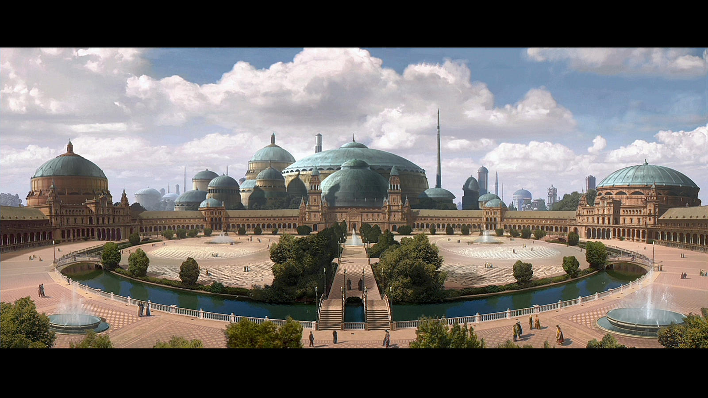
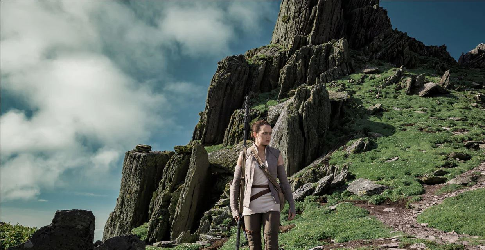
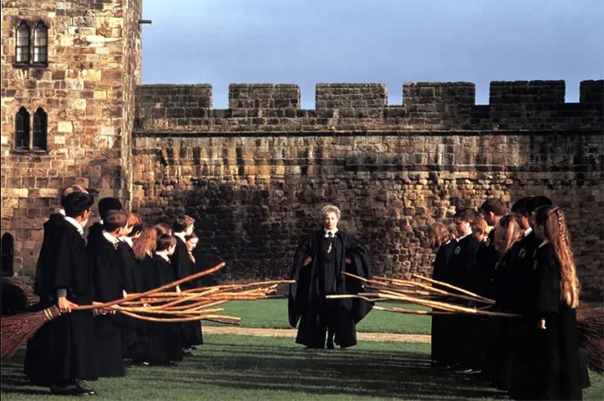

No decorrer da história da humanidade, diversas civilizações das mais variadas culturas e costumes deixaram suas marcas. Algumas delas fazem nosso imaginário voar, pois de tão exóticas podem nos fazer crer que vieram outras realidades. O cinema, com a magia de nos transportar para outros mundos, muitas vezes se utiliza dessas construções ou paisagens naturais para criar essa sensação de outros mundos para nos contar as mais diversas histórias, com o intuito de cativar o espectador e complementar suas narrativas.
Abaixo, você confere pontos turísticos europeus que foram usados nas gravações de alguns filmes e que podem ser visitados.
Plaza de España, Sevilha, Espanha
É uma praça, em Sevilha, Espanha, construída em 1928 para a Exposição Ibero-Americana de 1929. Foi projetada por Aníbal González e os jardins do parque foram projetados por Jean-Claude Nicolas Forestier.
O complexo da praça é um grande semicirculo que representa os quatro reinos da Espanha, com edifícios continuamente correndo ao redor da borda acessível sobre o fosso por inúmeras pontes. Nas paredes, estão muitos pisos em azulejo alcovas, cada um representando uma diferente província da Espanha.
O local já foi utilizado nas filmagens de Star Wars - Episódio II: Ataque dos Clones, para representar a cidade de Theed, no planeta Naboo.
A entrada é gratuita.

Cena do filme Star Wars - Episódio II: Ataque dos Clones
Skellig Michael, ou Rocha de Miguel em português, é uma ilha adjacente à Irlanda, onde fica situado um mosteiro construido no ano 588, considerado como Patrimônio Histórico da Humanidade pela UNESCO em 1996. Está situada no Oceano Atlântico, a 8 milhas da costa do condado de Kerry, no sudoeste irlandês.
O local já foi utilizado nas filmagens dos filmes Star Wars - Episódio VI: Despertar da Força e Star Wars - Episódio VII: Os Últimos Jedi para representar o planeta Ahch-To.
A viagem a até a ilha leva duas horas e meia aproximadamente e custa 40 euros por adulto e 25 euros por criança.

Cena do filme Star Wars - Episódio VII: Os Últimos Jedi
Residência do 12º Duque de Northumberland, sua primitiva estrutura foi erguida por Yves de Vescy, barão de Alnwick, em 1096, para defender o norte da Inglaterra das invasões escocesas. Adquirido pela família Percy, os duques e condes de Northumberland desde 1309, foi restaurado em diversas ocasiões ao longo da história.
O exterior do castelo foi usado para as filmagens de Hogwarts, nos filmes de Harry Potter.
A visitação ao exterior do castelo é gratuito. Já para o interior é necessário fazer agendamento, que no momento está fechado, abrindo novamente a partir de março de 2023.

Cena do filme Harry Potter e a Pedra Filosofal